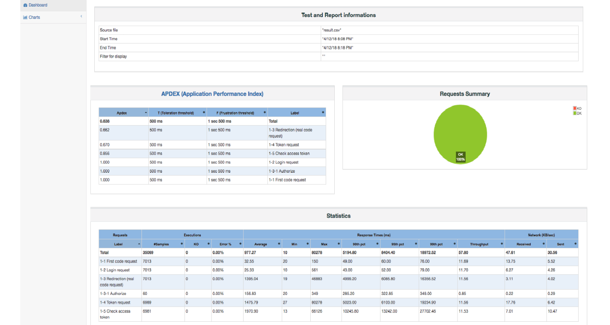

부하 테스트
서버가 감당할 수 있는 부하를 확인하는 부하 테스트 스크립트가 제공됩니다. 테스트 스크립트는 Bash 기반으로JMeter를 사용하여 작성되어 있습니다.
JMeter 설치
본 스크립트는 JMeter 4.0 기반으로 작성되어 있습니다. 다음의 명령을 통해 JMeter 4.0 바이너리를 받아올 수 있습니다.
$ curl -o apache-jmeter-4.0.zip http://mirror.apache-kr.org//jmeter/binaries/apache-jmeter-4.0.zip
혹은 http://jmeter.apache.org/download_jmeter.cgi 에서 받으실 수 있습니다.
정상적으로 다운로드가 완료되면 다음의 명령어를 통해 압축을 풀 수 있습니다.
$ unzip apache-jmeter-4.0.zip
정상적으로 압축을 해제하면 다음의 경로에 실행 파일이 있습니다. 다음의 명령어를 통해 환경변수에 JMeter를 추가합니다. ${INSTALL_DIRECTORY}는 JMeter를 압축 해제한 디렉터리의 절대 경로입니다.
$ cat << EOF > ~/.bashrc
export PATH=\$PATH:${INSTALL_DIRECTORY}/apache-jmeter-4.0/bin
EOF
재로그인을 하거나 다음 명령으로 적용할 수 있습니다.
$ . ~/.bashrc
실행
다음의 명령어를 통해 실행할 수 있습니다. ${N_THREAD}는 스레드의 개수입니다.
$ coinstack-load-test -n ${N_THREAD}
구체적인 인자는 -h 명령어를 통해 확인하실 수 있습니다. 괄호 안의 값은 기본값입니다.
$ coinstack-load-test -h
-i : server ip address (SERVER_IP : localhost)
-p : server port (SERVER_PORT : 8080)
-n : number of threads to use (N_THREAD : 1)
-r : rampup time in seconds (RAMPUP_TIME : 30)
-d : test duration in seconds (DURATION : 300)
-t : timeout per each request (TIMEOUT : 0 (0 means no timeout))
-h : show options
| 인자 | 설명 |
|---|---|
| -i | 서버 아이피 (기본값 : localhost) |
| -p | 서버 포트 (기본값 : 8080) |
| -n | 스레드 개수 (기본값 : 1) |
| -r | 램프업 시간 (기본값 : 30초) |
| -d | 테스트 시간 (기본값 : 5분) |
| -t | 각 요청 별 타임아웃 (기본값 : 없음) |
| -h | 도움말 출력 |
실행 시 다음과 같은 화면을 보실 수 있습니다. 블록체인에 클라이언트, 사용자가 등록되어 있지 않다면 최초 한번은 y를 눌러서 클라이언트, 사용자를 등록해야 합니다.
Do you wanna setup the client, user for load test [y|n]?
>
y를 누르면 관리자의 개인키를 입력하는 창이 출력됩니다.
Input the administrator's private key [default : KyQxDqRvUYAKnMHN3PvHwQUwpQvtu5Bz2MDARaNBZiTsdTRAaj5e]
>
관리자의 개인키를 입력하고 엔터를 치면 부하 테스트를 위해 필요한 사용자, 클라이언트를 생성 후 부하 테스트를 실행합니다. 그냥 엔터를 칠 경우 디폴트 값으로 설정 후 진행합니다. 사용자의 개수는 테스트 수행 시 인자로 들어온${N_THREAD}만큼 생성되므로 이후 ${N_THREAD}보다 큰 스레드 개수로 테스트를 수행하려고 할 시 다시 실행하여야 합니다. 그렇지 않으면 최초 한번 실행 후 실행하지 않아도 됩니다.
Do you wanna setup the client, user for function test [y|n]?
> y
Input the administrator's private key [default : KyQxDqRvUYAKnMHN3PvHwQUwpQvtu5Bz2MDARaNBZiTsdTRAaj5e]
>
Processing clients..
<==================================================> 100 %
...
n을 누르면 부하 테스트를 바로 수행합니다.
Do you wanna setup the client, user for function test [y|n]?
> n
Settings:
host http://localhost:8080
number of thread 1
rampup time 60 seconds
test duration 600 seconds
timeout per each request 0 miliseconds
result directory name postfix dashboard
...
테스트 결과는 load-test-n${N_THREAD}-dashboard 디렉터리 안의 index.html을 브라우저로 열면 확인하실 수있습니다.
$ ls load-test-n10-dashboard/
README.TXT content index.html jmeter.log result.csv sbadmin2-1.0.7
같은 스레드 개수로 부하 테스트를 재실행시 중복제거를 위해 기존 디렉터리는 사라지니 다른 곳으로 옮기고 실행해야 합니다.
index.html을 브라우저로 열면 다음과 같은 화면을 확인할 수 있습니다.

성능 측정의 대표적인 지표인 TPS는 Response Times의 Throughput으로 확인하실 수 있습니다.
자세한것은 다음의 URL에서 확인할 수 있습니다.
https://jmeter.apache.org/usermanual/generating-dashboard.html